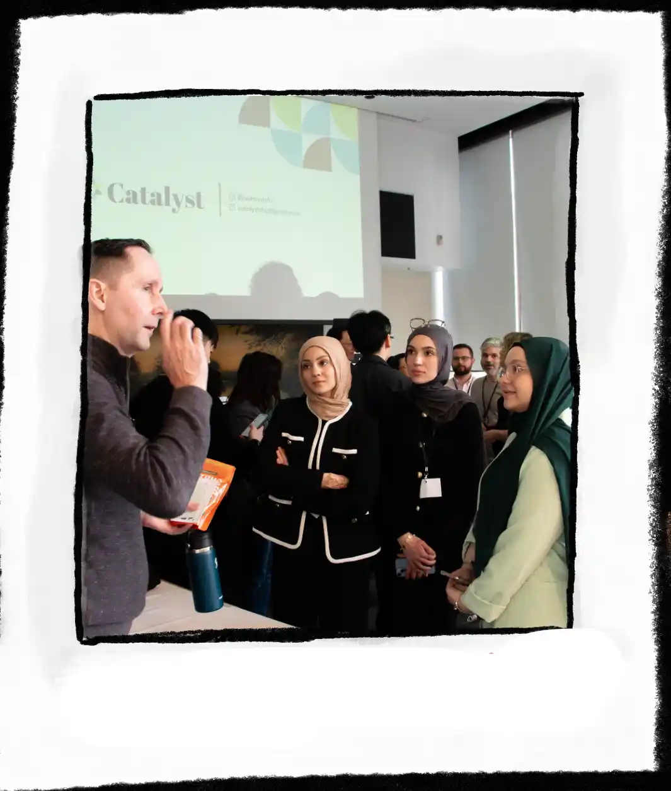
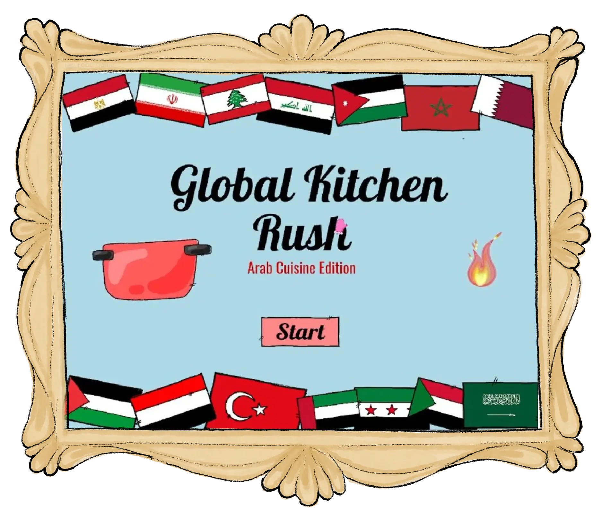
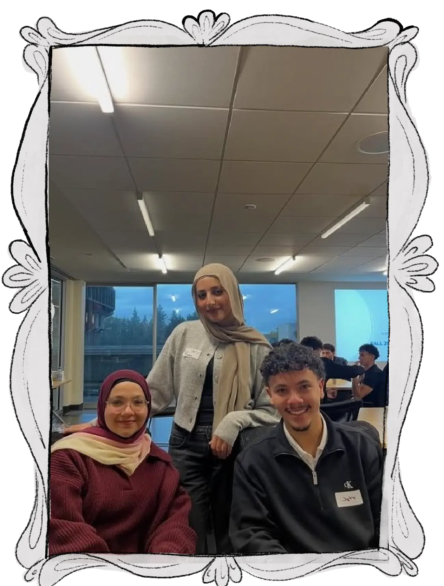
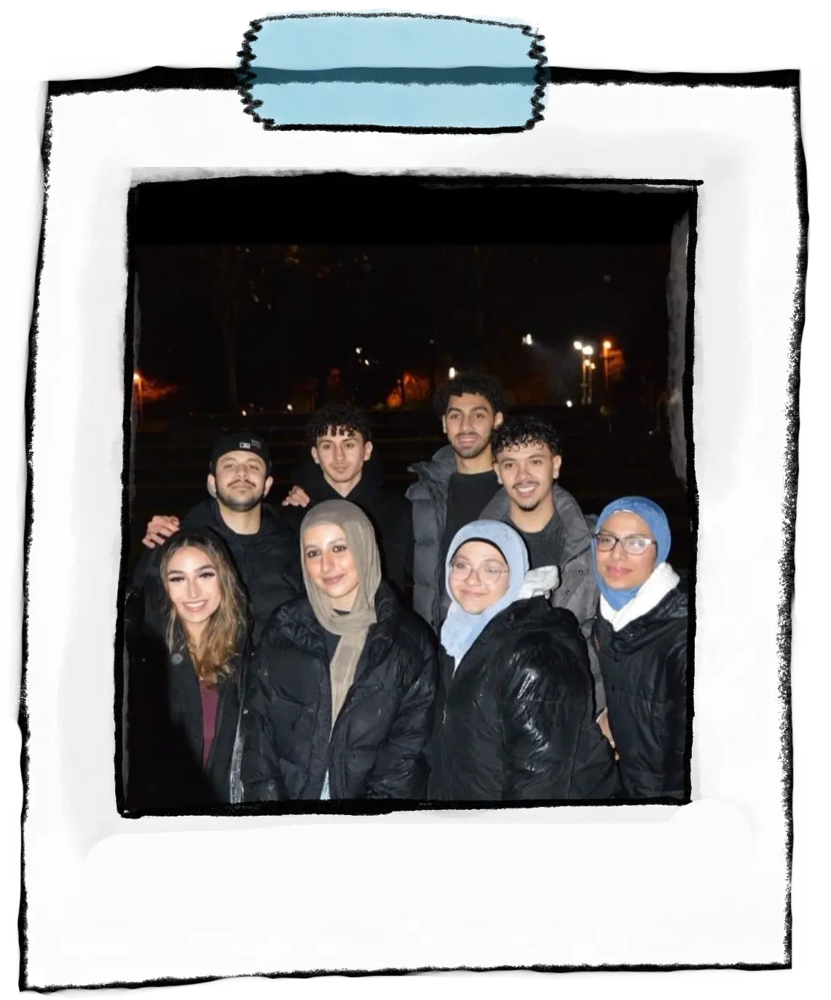
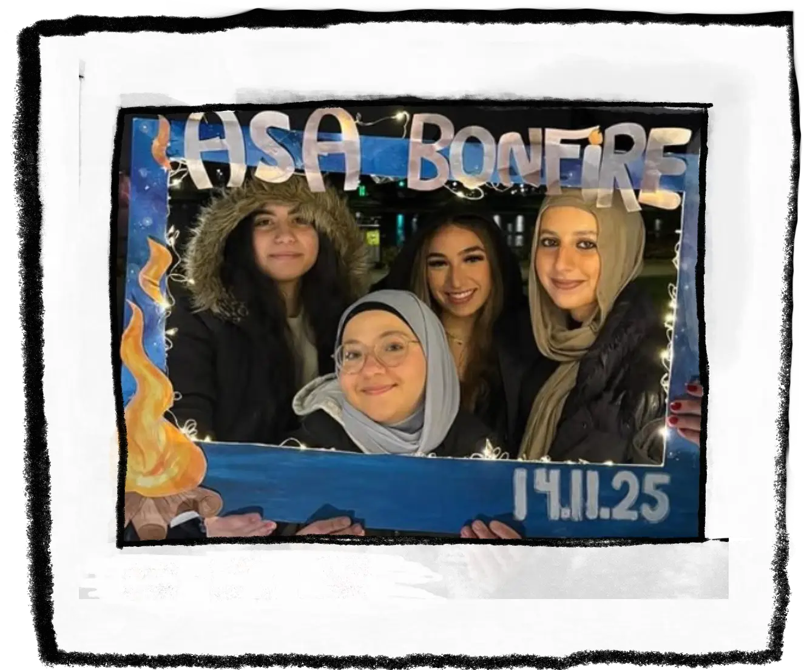

Entrepreneurship · UX Design
SkyConnect
An award-winning SkyTrain concept brought to life through animation, storytelling and 3D design.
Scroll, swipe, or select a paint swatch to explore.


Entrepreneurship · UX Design
An award-winning SkyTrain concept brought to life through animation, storytelling and 3D design.


Game Design · Java Programming
A hand drawn cooking game I designed and programmed entirely from scratch.


Product Design · Assistive Technology
A wearable assistive bag I designed, sewed and refined through user testing.


Graphic Design · Social Media Branding
Building ASA's visual identity through event graphics, illustration and social media design.


Mechanical Design · CAD Modelling
Designing and modelling a mechanical scene where every movement was driven by linkages and cams.


Project Category
Short project description goes here.
Catalyst Entrepreneurship Challenge · Spring 2025
Turning transit research into a visual experience people could understand, imagine and remember.

SkyConnect started with a simple question: how could SkyTrain feel safer and more welcoming for families? As a team, we collaborated on UX research, rider surveys and ideation to shape a practical family-friendly transit zone. My focus was turning that research into something people could immediately understand visually. I built the 3D model and designed our entire animated pitch deck from scratch in PowerPoint. The project went on to win first place.



My role was to make our idea visible, believable and memorable. While our team worked together on the research and concept, I focused on bringing everything to life visually. I created the 3D SkyTrain model in Onshape, designed custom assets such as the stroller areas, camera, buckle, seating and safety features, and built the full animated presentation from scratch. I moved between research, modelling, animation and storytelling depending on what the project needed.
Our research never stayed inside the classroom. We interviewed family, friends and even stopped people on the SkyTrain and in public to hear their experiences. Together, we went through transit-safety information line by line, collected rider feedback, compared ideas and challenged each other's assumptions. Once we agreed on the direction, I focused on translating the research into the 3D model and animated presentation while my teammates developed the other parts of the solution.
The hardest part was not finding ideas, it was deciding what not to include. We had pages of research, survey responses, safety concerns and operational details that sometimes confused even us. We wanted the pitch to stay short without losing the full imagination behind the concept, so I focused on combining minimal words with strong visuals. I had to decide what to show, what to simplify and how animation and the 3D model could guide attention.
SkyConnect changed the way I think about presenting ideas. A concept cannot stay inside a mind map, you have to help people see and experience it. Once our idea began moving through animation and became tangible through the 3D model, the conversation completely changed. Judges, students and other competitors started sketching suggestions on sticky notes and adding them to our board as if the space already existed. Winning first place was incredible, and sharing that win with my twin brother, who was part of the team, made it even more special.


IAT 265 · Multimedia Programming for Art and Design
A cooking game where every ingredient, interaction and illustration was created from scratch.


Global Kitchen Rush began with my love of food, culture and playful learning. I wanted players to discover international dishes by experimenting instead of simply following instructions. They combine ingredients, test recipes and unlock flags, facts and collectible rewards when they find the right meal. What made my project different was that I created the entire experience myself, from the game concept and Java systems to every hand drawn ingredient, screen and character.

I did everything on this project. I developed the concept, planned the gameplay, drew every visual asset by hand and programmed the complete game in Java. I built the drag-and-drop interactions, recipe-recognition system, country collection, buttons, audio and feedback screens. I wanted the game to feel unmistakably mine, so rather than using stock graphics, I drew the ingredients, meals, flags, kitchen, interface and small details in the same playful handmade style.
The most important system was the recipe matcher. When players add ingredients, the game compares their selection against stored recipe combinations and decides whether they created a real dish. A correct match unlocks the meal, its country and a cultural fact. A wrong combination still gives playful feedback, so experimenting never feels like a punishment.





I began with storyboards and rough interface sketches to understand how a player would move through the kitchen. From there, I drew the ingredients, meals and screens, then gradually turned each sketch into an interactive Java component. I moved back and forth between drawing, coding and testing constantly. When an interaction felt confusing, I changed the interface; when an idea looked fun but was difficult to use, I simplified the mechanic.

The hardest part was making the recipe system flexible without making the game unpredictable. Ingredients could be selected in different orders, but the result still needed to match the correct meal. At the same time, I was drawing every asset and trying to keep the interface clear. It forced me to think like both a programmer and a visual designer instead of treating the code and artwork as separate parts.
This project proved to me that I do not have to choose between designing and developing. I could sketch a strange little ingredient, turn it into a working object and then build an entire interaction around it. Creating everything myself was a huge amount of work, but it also gave the game a personality that felt completely consistent. That handmade approach is something I carried directly into the design of this portfolio.


IAT 336 · Materials in Practice · Opportunity Fest 2025
A wearable assistive bag shaped through accessibility research, physical making and real user feedback.

Tech4Ease explored how wearable technology could support people who are blind or visually impaired by detecting upper-body obstacles beyond the reach of a traditional white cane. As a team, we developed the concept and combined sensors, audio feedback and a wearable form. My focus was the physical design itself: how the bag should look, sit on the body, hold the electronics and still feel comfortable enough to use in everyday life.


I focused on transforming the idea into a real, wearable product. I sketched the bag, explored its shape and material choices, planned how the components would sit inside, and completed the sewing and physical construction. I also helped test the prototype with users and translated their feedback into design changes. My role sat between product design and fabrication, making sure the technology did not overpower the comfort, appearance or usability of the bag.


We began by researching white-cane limitations, assistive devices and wearable technologies. Early ideas placed technology directly on the cane, but user feedback pushed us toward a hands-free crossbody bag. From there, I developed sketches, explored different shapes and tested how the bag sat on the body. I moved between sewing, fitting and user testing, adjusting the structure whenever something felt too heavy, awkward or difficult to access.

I constructed the final bag by hand, combining sewn fabric with the 3D-printed sensor housing and internal electronics. The challenge was not simply attaching everything together; the bag still needed to feel like a wearable object rather than a technology prototype. Material choice, strap placement, weight and access to the components all affected the final form.
The hardest part was balancing function with wearability. The device needed enough structure to protect the sensors and wiring, but too much structure made it heavy and uncomfortable. User testing exposed details that sketches could not, especially how the bag shifted, where pressure formed and whether the controls were easy to reach. I kept revising the construction until the technology felt integrated instead of simply attached.
Tech4Ease taught me that a product can look resolved on paper and still fail once someone wears it. The most valuable design decisions came from making, testing and then taking the prototype apart again. Sewing the bag myself gave me complete control over its form, but it also made every weak point very obvious. I left the project with a much stronger understanding of how accessibility, comfort and physical construction shape one another.


Arab Student Association · Simon Fraser University
Building a recognizable student brand one event at a time.
Unlike most of my university projects, this one never really ends. As Graphic Executive for SFU's Arab Student Association, every event brings a different audience, mood and deadline. My role is not only to make graphics look good, but to create visuals that quickly communicate what an event feels like and make students interested enough to attend.
I design posters, Instagram graphics, invitations, animated posts and event-specific visual identities. I often begin with sketches or hand-drawn elements, then develop the final design around the personality of the event while keeping ASA recognizable across its different campaigns.





ASA taught me something university assignments rarely do: design does not end when something looks good. If nobody notices the post, understands the information or attends the event, then the design has not done its job. Creating graphics for real events made me faster, more adaptable and more confident making decisions under tight deadlines.
It also taught me how to balance consistency with variety. ASA hosts everything from board-game nights and mixers to Ramadan gatherings, so every campaign needs its own personality without making the organization feel like a collection of unrelated designs. Over time, I learned that a recognizable identity is built through many small, consistent choices rather than one perfect poster.


IAT 106 · Spatial Thinking and Communicating
Bringing a mechanical story to life through CAD modelling, sketching and moving mechanisms.
Explore the completed automata from every angle and see how each individual component comes together to create one continuous animated scene.
This project challenged us to transform simple mechanical principles into a scene that felt alive. Together we designed an automata featuring birds, fish, boats, waves and a rising sun, all animated through four-bar linkages and cam mechanisms. While the engineering made everything move, the visual design gave the machine its personality and story.
Seeing individually modelled parts work together as one synchronized mechanism taught me how design and engineering rely on one another to create something engaging.

I focused on creating the visual world of the automata. I began by sketching ideas for the composition before modelling the fish, boat, waves and sun in CAD. My goal was to make each moving element feel playful while remaining simple enough to work within the mechanical system. My teammate developed the linkage mechanisms and completed the final assembly, bringing all of our individual components together into one functioning machine.


Although the movement was powered by four-bar linkages and cam mechanisms, every moving object first needed to be carefully designed so it could fit within the mechanical constraints while still creating an engaging animated scene.


I started by sketching different ideas for the scene before moving into CAD. Once the composition was finalized, I modelled the fish, boat, waves and sun individually, refining each object until it was both visually appealing and suitable for mechanical movement. After the models were complete, they were integrated with the linkage system and tested together as one animated assembly.
One of the biggest challenges was balancing creativity with practicality. Every object had to look expressive while remaining simple enough to move correctly once connected to the mechanism. Even small changes to a model could affect spacing, movement or neighbouring components, so every design decision required careful iteration.
Working as a team also meant constantly coordinating the visual models with the mechanical engineering so that both parts fit together seamlessly.
Before this project I mostly viewed CAD as a way to build objects. Automata showed me that CAD can also be used to tell stories through movement. Starting with sketches helped me think creatively, while modelling each object taught me how precision becomes essential once something has to move instead of simply exist.
Collaborating on the project also reinforced the importance of combining different strengths. My visual designs and CAD models, together with my teammate's linkage system and assembly, produced a final machine that neither of us could have created alone.

CAD Modelling · Concept Sketching · Mechanical Design · Design Iteration · Creative Problem Solving